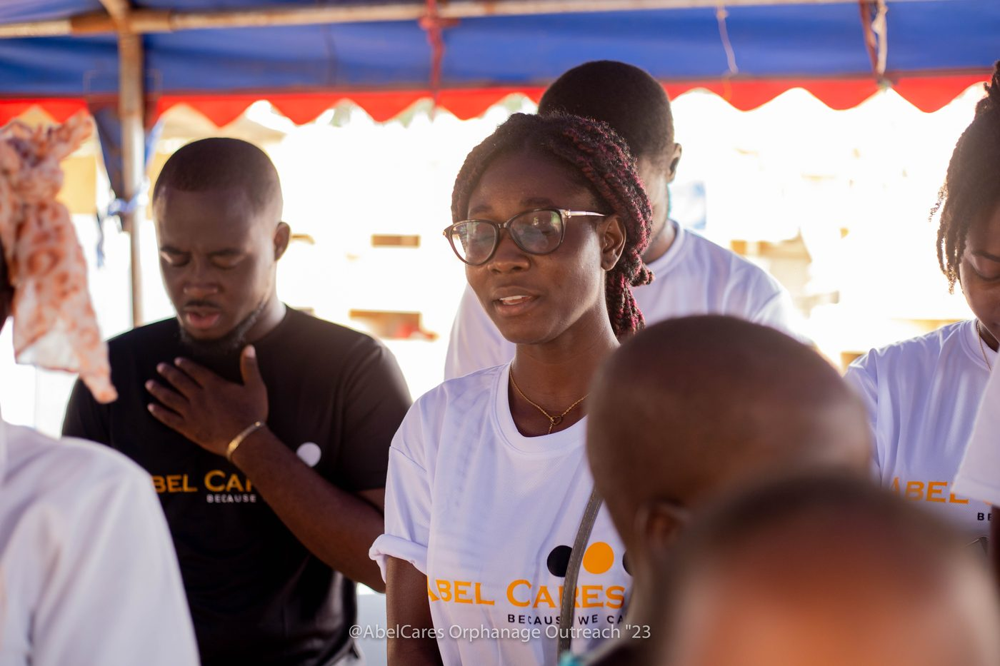

Rooted in African leadership, driven by evidence, dedicated to human dignity.
AbleCares Initiative Africa is an independent non-governmental organization established in Accra, Ghana. We exist to dismantle the deep structural silence surrounding mental health, champion the rights of neurodivergent children, and build resilient community support systems across Africa.

Why ACI Africa Exists
In many African societies, mental health conditions and neurodevelopmental diversities continue to be obscured by intense social stigma, spiritual misattributions, and institutional underfunding.
Families caring for children on the autism spectrum or with learning differences frequently suffer in isolation, while youth experiencing severe psychological distress encounter judgment rather than care.
ACI Africa was founded to build a credible, culturally grounded bridge: bringing scientific psychoeducation directly into schools, religious institutions, and local communities without eroding the collective strengths of African cultural life.
Four Tenets of Our Operating Philosophy
African Leadership
Solutions to African challenges must be conceived, directed, and sustained by African practitioners, youth, and communities with intimate knowledge of local cultural contexts.
Human Dignity First
Every child, youth, and caregiver is recognized as inherently worthy. We reject sensationalist or pity-driven portrayals of mental illness and special educational needs.
Community Ownership
Lasting impact cannot be imposed from outside. Our psychoeducation models train local educators, parents, and youth leaders to sustain peer-support circles autonomously.
Rigorous Transparency
We decline to invent claims or exaggerate reach. We maintain complete clarity regarding our verified outcomes, financial pledges, and institutional governance.
Institutional Management in Accra
ACI Africa operates under a collective governance model coordinated from Accra, Ghana. The organization is structured across specialized initiative directorships:
- Mental Health Directorship: Overseeing PAMHO community dialogues and psychological first-aid training.
- Neurodiversity & Special Education Lead: Directing the AbleKids curriculum, educator toolkits, and caregiver circles.
- Youth & Peer Mentorship Lead: Coordinating EmpoweredTalks Africa clubs in secondary and tertiary institutions.
- Finance & Compliance Oversight: Managing pledge records, audit compliance, and partner MoUs.
Institutional Non-Clinic Scope
ACI Africa is an advocacy, educational, and psycho-social support initiative. We do not operate emergency inpatient psychiatric facilities or claim authority as a clinical hospital. Our role is early psychoeducation, stigma dismantling, peer support, and navigation to accredited medical care.